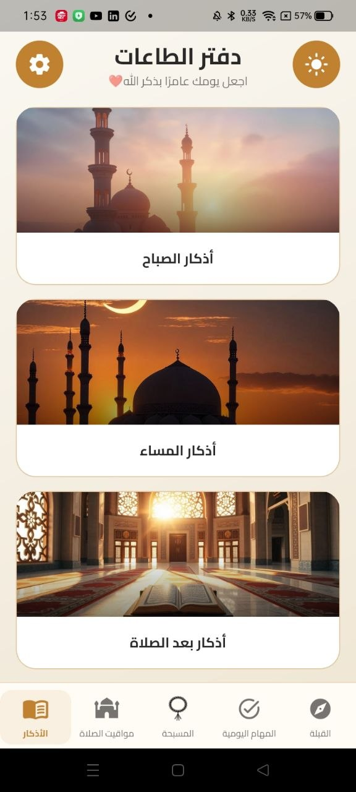
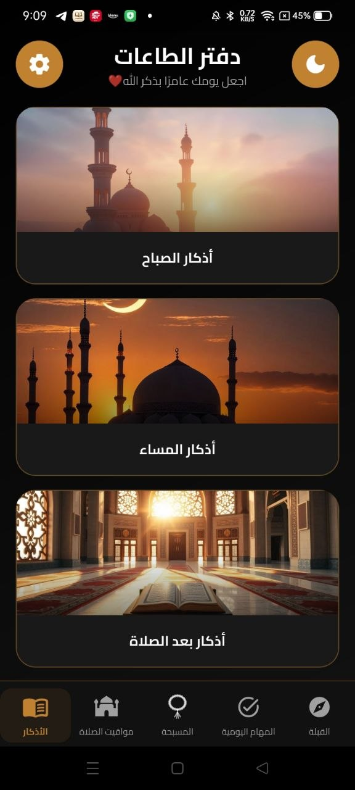
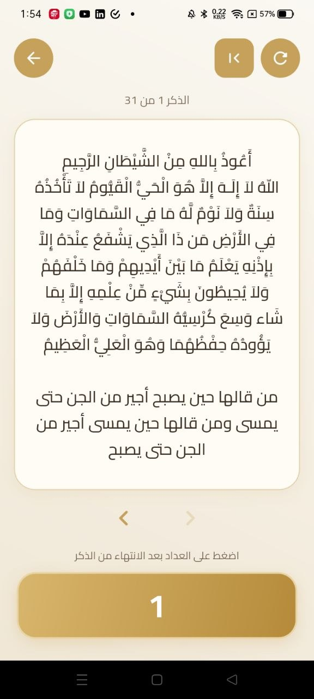
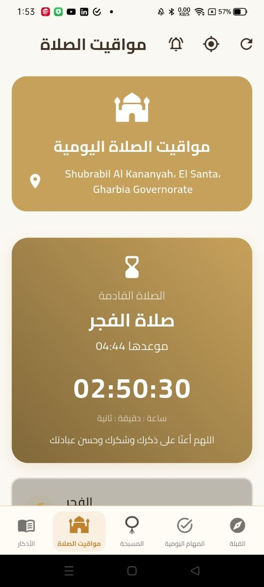
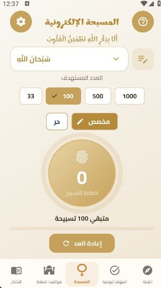
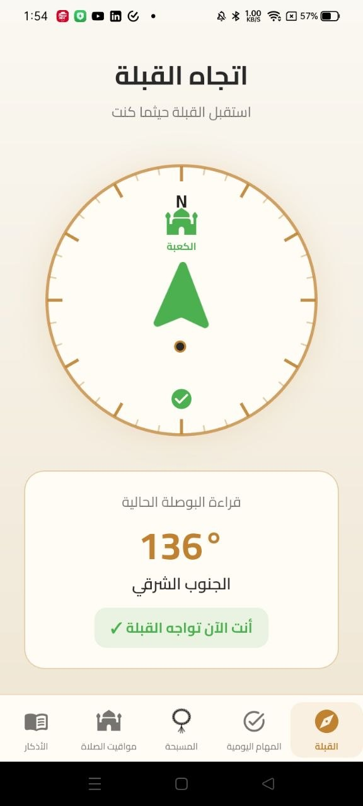
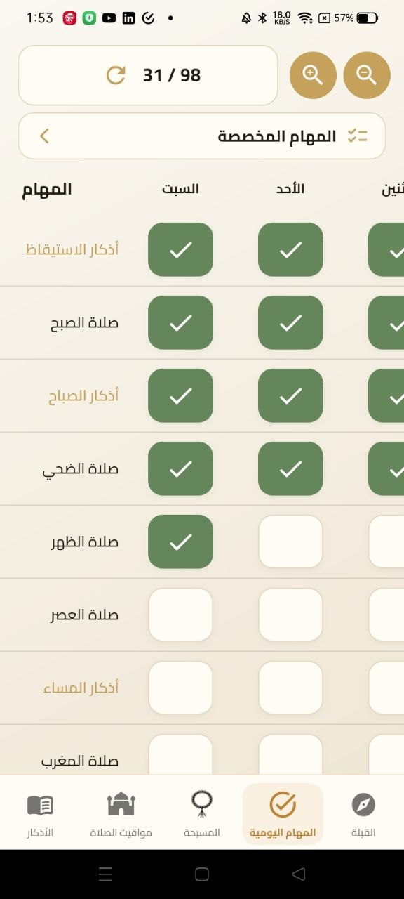
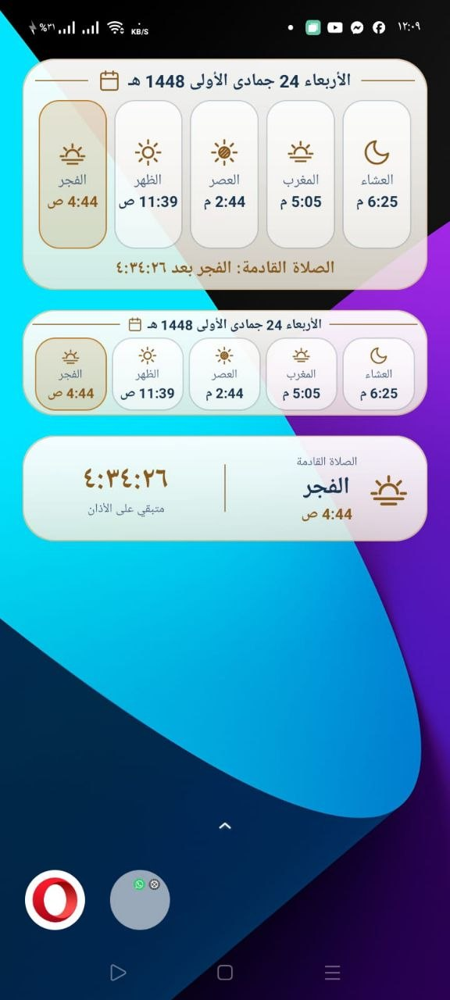

اجعل يومك عامرًا بذكر الله
دفتر الطاعات رفيقك اليومي: أذكار الصباح والمساء، مواقيت الصلاة، مسبحة إلكترونية، اتجاه القبلة، ومتابعة لطاعاتك كل يوم، في تطبيق واحد.
حمّل من Google Play- عربي بالكامل
- مظهر فاتح وداكن
- ويدجت للشاشة الرئيسية


الأذكار
يظهر كل ذكر في بطاقة واضحة بخط كبير مشكَّل. تنقّل بين الأذكار، واضغط العدّاد كلما أتممت الذكر ليحسب لك التكرار.
- خمس مجموعات: الصباح والمساء وبعد الصلاة والاستيقاظ والنوم
- ترقيم الأذكار ومعرفة ما تبقى منها
- عدّاد تكرار لكل ذكر

مواقيت الصلاة بين يديك
يحدد التطبيق موقعك ويعرض الصلاة القادمة وموعدها، مع عدّاد يتناقص حتى وقت الأذان.
- عدّاد بالساعة والدقيقة والثانية للصلاة القادمة
- تذكير بمواعيد الصلاة
- تحديث الموقع بضغطة واحدة

ورفيقان لكل يوم

المسبحة الإلكترونية
اختر الذكر وحدّد العدد المستهدف: 33 أو 100 أو 500 أو 1000، أو عددًا تحدده أنت، ثم اضغط للتسبيح.

اتجاه القبلة
بوصلة تدلّك على اتجاه الكعبة أينما كنت، وتخبرك حين تواجه القبلة.
دفتر طاعاتك اليومي
جدول أسبوعي تتابع فيه الأذكار وصلاة الضحى والصلوات الخمس. علّم ما أنجزته وشاهد تقدّمك.
- عدّاد يبيّن ما أنجزته من إجمالي المهام
- مهام مخصصة تضيفها بنفسك
- تكبير الجدول وتصغيره بحسب راحتك

ويدجت على شاشتك الرئيسية
تابع الصلاة دون فتح التطبيق، بثلاثة أشكال تناسب شاشتك: جدول كامل لمواقيت اليوم والتاريخ الهجري، أو شريط مختصر، أو الصلاة القادمة مع الوقت المتبقي على الأذان.

حاسبوا أنفسكم قبل أن تُحاسَبوا، وزنوا أعمالكم قبل أن تُوزن عليكم
من هذه الفكرة جاء دفتر الطاعات: أن تحاسب نفسك يومًا بيوم.
التطبيق في مرحلة الاختبار
نعمل الآن على تجربة التطبيق مع مجموعة من المختبرين على Google Play، وسيتاح للجميع قريبًا بإذن الله.
قريبًا على Google Play